01
Operations & Admin
Inbox support, coordination, documentation, data entry and recurring business tasks.
Operational support for growing businesses
Flexible operational support for small and growing businesses that need more capacity without building a full in-house team.

WHY ARSC
Admin, website updates, design work, coordination and recurring tasks can quickly consume the time you should be spending on higher-value work.
AR Services Collective helps take those responsibilities off your plate and keeps them moving.
See where we can support you →OUR SUPPORT
Flexible support across the recurring work that keeps a business moving.
Inbox support, coordination, documentation, data entry and recurring business tasks.
Website updates, WordPress support, landing pages and ongoing digital maintenance.
Social media assets, presentations, documents and everyday business design.
Content preparation, scheduling, publishing support and ongoing social media assistance.
PROVEN SUPPORT
Supporting businesses across bodybuilding, fitness, medical, fashion, nutrition, photography and videography.
WHY ARSC
Use ARSC for an individual project or ongoing support, depending on what your business needs.
Work with one collective instead of managing several separate freelancers yourself.
Clear communication, organised delivery and consistent follow-through from start to finish.
Different tasks can be handled by the people best suited to the work.
HOW IT WORKS
We keep the process simple so you can spend less time managing support and more time focusing on the work only you can do.
We learn what is taking your time, what needs attention and where additional capacity would help.
ARSC identifies priorities and coordinates the right people for the work.
Tasks are completed, progress is communicated and support continues as required.
ABOUT THE COLLECTIVE
AR Services Collective brings together practical skills across operations, digital support, design and administration under one coordinated service.
Instead of finding and managing a different freelancer for every task, clients can work with one collective that understands their business and helps keep things moving.
OUR TEAM
A focused team combining operational, digital, creative and administrative support.
LET'S TALK
Tell us what’s taking up your time and where you need more capacity. We’ll help work out where ARSC can support you.
START A CONVERSATION
admin@arservicescollective.comSend us a quick overview of what you need help with. It doesn’t need to be formal, we can work through the details together.
Tell us what you need